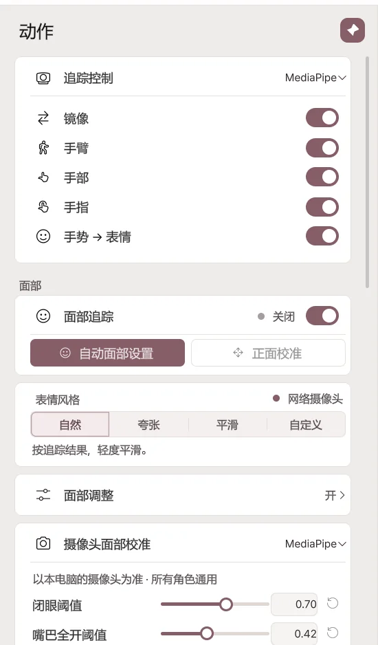
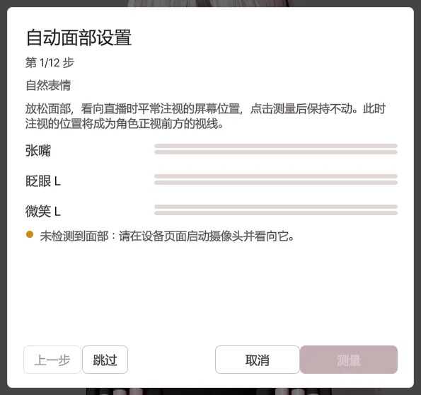
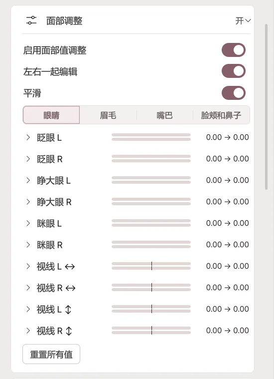
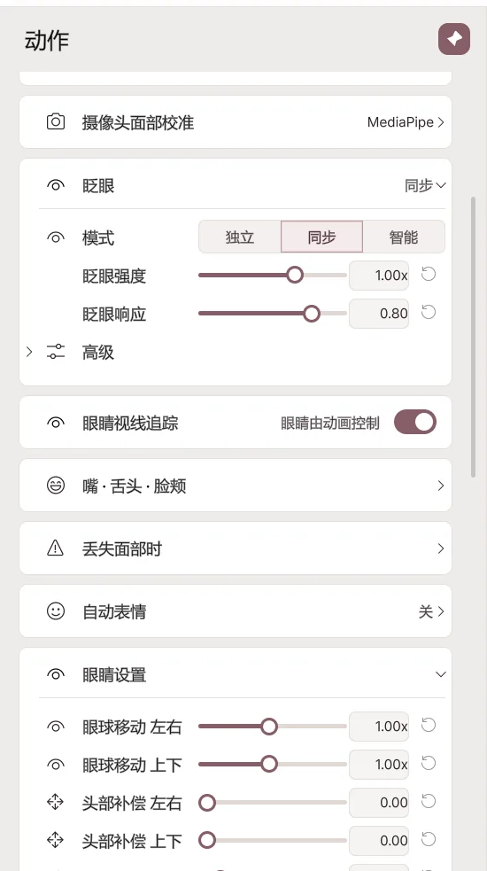
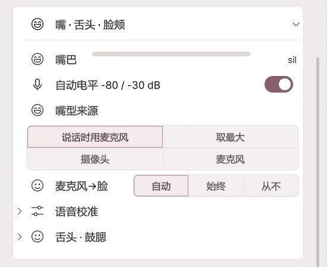
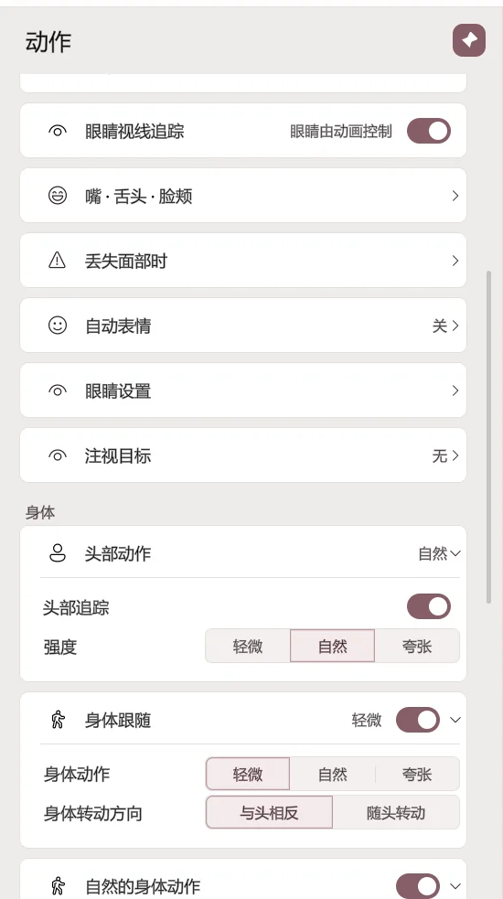
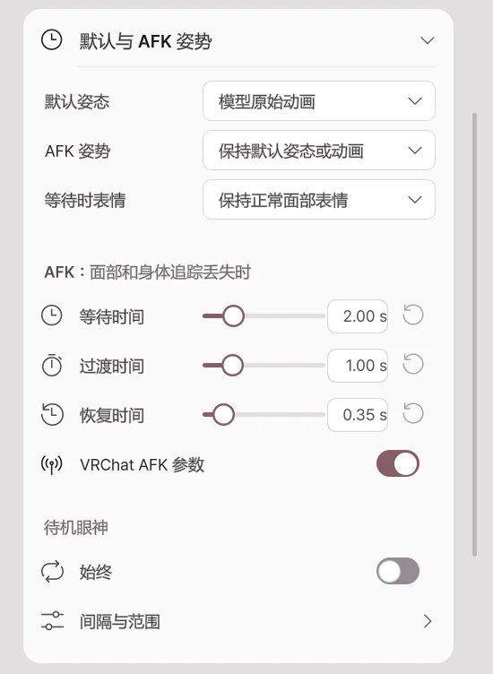
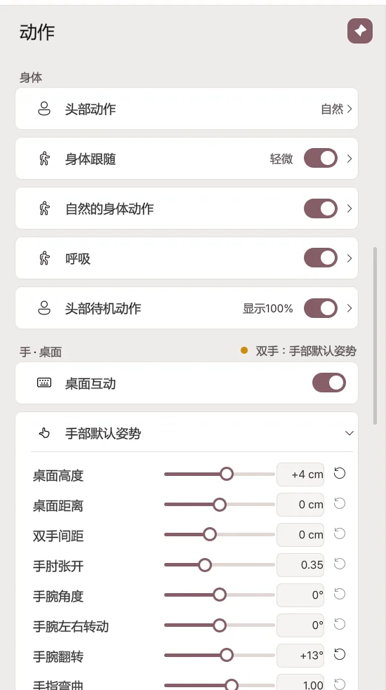

动作
决定我的表情和动作在角色上反映得有多大、多流畅。设置会按每个角色保存。
脸

| 项目 | 调整时 |
|---|---|
| 面部追踪 | 开启后会反映我的表情。关闭后不使用面部输入。 |
| 镜子 | 像镜子一样反映左右移动。 |
| 手势 → 表情 | 使用与手势相连的角色表情。 |
| 表情敏感度 | 提高会把小表情也表现得很大，降低则显得平静。 |
| 柔软度 | 提高会减少抖动，降低会快速响应。 |
自动面部设置

- 点击自动人脸设置。
- 按照指引看向正面或做表情。
- 按下测量并进入下一步。
- 最后点击应用。
面部调整

- 眼睛·眉毛·嘴巴·脸颊：分别调整每个表情的移动幅度。
- 左右一起编辑：打开后会把两边改为相同的值。
- 平滑：减少小的表情抖动。太高的话反应会变慢。
眼睛与视线

| 项目 | 结果 |
|---|---|
| 单独眨眼 | 左眼和右眼分别闭合。用于眨眼或眨一只眼。 |
| 眨眼同步 | 双眼同时闭合。 |
| 自动眨眼 | 即使没有输入，也会定期眨眼。 |
| 眼睛视线追踪 | 反映我眼球的方向。 |
| 镜头视角 | 使虚拟人物的眼球朝向摄像机。 |
| 注视目标 | 选择要看的对象，如摄像机、特定虚拟人物等。 |
头部追踪、面部追踪和镜头视角可分别设置。即使头部固定，眼球也可以看向摄像机。
嘴巴与口型同步

- 口型同步强度：调高会张大嘴巴。
- 自动音量：根据声音大小调整嘴巴动作。
- 声音矫正：发指示的元音以匹配我的声音。
- 舌头与脸颊鼓起：通过按钮或快捷键应用该表情。模型需要有对应表情才能显示。
身体

| 项目 | 调整后效果 |
|---|---|
| 头部动作 | 选择小·自然·大中动作的大小。 |
| 身体跟随 | 转头时身体也会跟着转。 |
| 自然动作 | 即使静止，也会增加小的待机动作。 |
| 呼吸 | 增加像呼吸一样的小身体动作。 |
| 上身·全身 | 反映设备接收到的身体动作。 |
追踪丢失时

AFK是在脸部和身体追踪都丢失时使用的待机状态。在菜单 → 基本·AFK姿势中设置时间。
| 时间 | 延长会怎么样 |
|---|---|
| 等待时间 | 即使输入暂时中断，也会保持姿势并多等待。 |
| 切换时间 | 缓慢过渡到待机姿势。 |
| 恢复时间 | 输入恢复后缓慢恢复正常动作。 |
待机时使用的姿势和表情可在基本姿势与待机姿势中选择。
手臂与手

| 项目 | 调节效果 |
|---|---|
| 手臂·手柔和度 | 提高后抖动减少，快速手势会延迟跟随。 |
| 动态方式 | 使用能够反映手伸展距离变化的手臂方式。 |
| 以前方式 | 可以与现有手臂动作方式进行比较。 |
| 手部深度估计 | 用摄像头估计前后距离。属于实验性功能，如果手臂扭曲，请关闭。 |
| 手部丢失返回 | 当手不在视线中时，调整回到默认姿势的速度。 |
桌面动作
当手不在摄像头视野中时，按照键盘或鼠标的使用来移动虚拟角色的手。
- 手部默认姿势：调整桌面高度、手间距和手腕角度。
- 键盘反应：打字时手指和手的移动幅度。
- 鼠标反应：移动鼠标时手跟随的幅度。
- 当手重新出现在摄像头前时，返回追踪状态。
键盘输入仅用于生成手部动作，不会保存或发送输入的文字。
表情无法显示时
只能移动虚拟角色已有的表情。如果有 VRCFaceTracking 设置，则使用该设置；如果有 ARKit 形状键，则使用该面部形状。不存在的表情，即使提高灵敏度也不会新增。